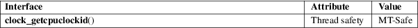

clock_getcpuclockid − obtain ID of a process CPU-time clock
Standard C library (libc, −lc), since glibc 2.17
Before glibc 2.17, Real-time library (librt, −lrt)
#include <time.h>
int clock_getcpuclockid(pid_t pid, clockid_t *clockid);
Feature Test Macro Requirements for glibc (see feature_test_macros(7)):
clock_getcpuclockid():
_POSIX_C_SOURCE >= 200112L
The clock_getcpuclockid() function obtains the ID of the CPU-time clock of the process whose ID is pid, and returns it in the location pointed to by clockid. If pid is zero, then the clock ID of the CPU-time clock of the calling process is returned.
On success, clock_getcpuclockid() returns 0; on error, it returns one of the positive error numbers listed in ERRORS.
|
ENOSYS |
The kernel does not support obtaining the per-process CPU-time clock of another process, and pid does not specify the calling process. | ||
|
EPERM |
The caller does not have permission to access the CPU-time clock of the process specified by pid. (Specified in POSIX.1-2001; does not occur on Linux unless the kernel does not support obtaining the per-process CPU-time clock of another process.) | ||
|
ESRCH |
There is no process with the ID pid. |
For an explanation of the terms used in this section, see attributes(7).

POSIX.1-2008.
glibc 2.2. POSIX.1-2001.
Calling clock_gettime(2) with the clock ID obtained by a call to clock_getcpuclockid() with a pid of 0, is the same as using the clock ID CLOCK_PROCESS_CPUTIME_ID.
The example program below obtains the CPU-time clock ID of the process whose ID is given on the command line, and then uses clock_gettime(2) to obtain the time on that clock. An example run is the following:
$ ./a.out
1 # Show CPU clock of init process
CPU−time clock for PID 1 is 2.213466748 seconds
Program
source
#define _XOPEN_SOURCE 600
#include <stdint.h>
#include <stdio.h>
#include <stdlib.h>
#include <time.h>
#include <unistd.h>
int
main(int argc, char *argv[])
{
clockid_t clockid;
struct timespec ts;
if (argc != 2)
{
fprintf(stderr, "%s <process−ID>\n",
argv[0]);
exit(EXIT_FAILURE);
}
if
(clock_getcpuclockid(atoi(argv[1]), &clockid) != 0) {
perror("clock_getcpuclockid");
exit(EXIT_FAILURE);
}
if
(clock_gettime(clockid, &ts) == −1) {
perror("clock_gettime");
exit(EXIT_FAILURE);
}
printf("CPU−time
clock for PID %s is %jd.%09ld seconds\n",
argv[1], (intmax_t) ts.tv_sec, ts.tv_nsec);
exit(EXIT_SUCCESS);
}
clock_getres(2), timer_create(2), pthread_getcpuclockid(3), time(7)